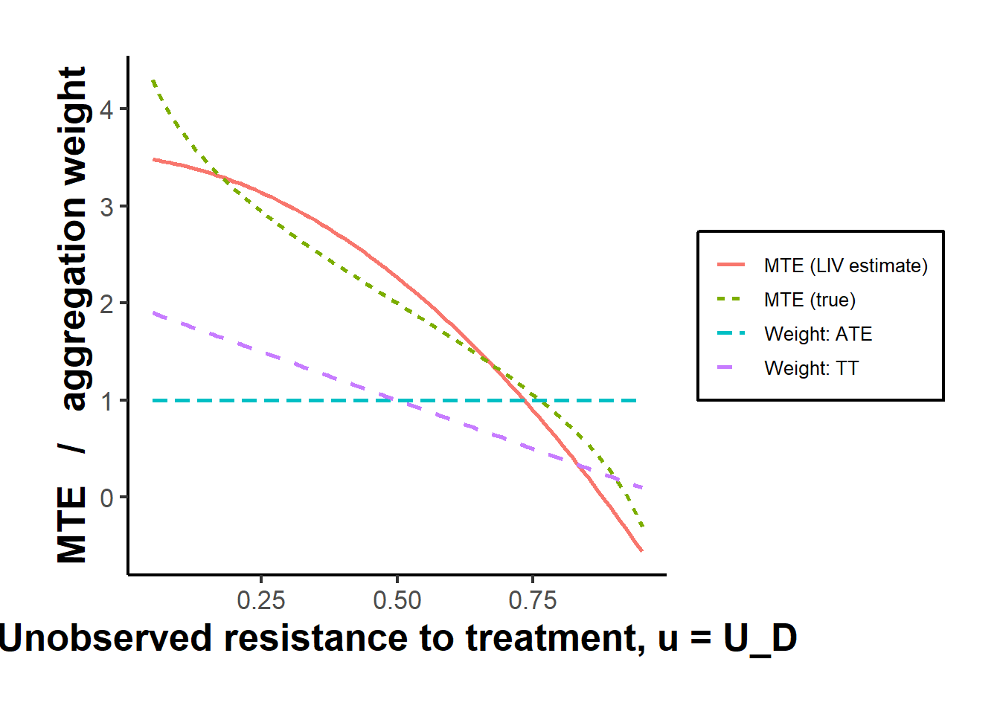

Chapter 63 Structural Models of Selection and Unobserved Heterogeneity
This chapter sits in the structural cluster alongside the companion treatments of demand estimation and dynamic choice. Its subject is the econometrics of self-selection when the agents who select into a sector, a treatment, or a sample do so partly on the basis of gains that the analyst cannot observe. The reduced-form chapter on endogeneity introduced the Heckman sample selection model and the inverse Mills ratio correction as a way to repair bias when the same unobservables drive both selection and the outcome. This chapter takes that machinery as understood and extends it in the direction that modern labor and policy econometrics has taken it: from a nuisance to be corrected toward a structural object to be estimated and interpreted.
The organizing idea is that heterogeneity in treatment effects, once we admit that agents know something about their own idiosyncratic gains and act on it, is not a statistical inconvenience but the central economic phenomenon. When individuals sort on their own returns, the population is no longer well summarized by a single number. The average treatment effect, the effect on the treated, and the effect estimated by an instrument can all differ, and the differences are economically informative rather than artifacts. The generalized Roy model gives the framework, the marginal treatment effect gives the unifying parameter, and finite mixture and factor models give the tools for the unobserved types and latent skills that the framework presumes.
63.1 The Generalized Roy Model
The Roy model is the canonical economic account of self-selection. Each agent possesses two potential outcomes, one in each of two sectors, and chooses the sector that yields the higher net return. Because the choice depends on the potential outcomes themselves, the observed distribution in each sector is a selected, not a random, sample of the population. Heckman and Honoré (1990) characterized exactly what features of the joint distribution of potential outcomes can be recovered from such selected data, a question of empirical content that anchors everything that follows.
Let each agent have potential outcomes \(Y_1\) in sector or treatment state \(1\) and \(Y_0\) in state \(0\),
\[ Y_1 = \mu_1(X) + U_1, \qquad Y_0 = \mu_0(X) + U_0, \]
where \(X\) collects observed covariates and \((U_1, U_0)\) are unobservables with mean zero. The individual gain is \(Y_1 - Y_0 = \mu_1(X) - \mu_0(X) + (U_1 - U_0)\). The crucial term is \(U_1 - U_0\), the idiosyncratic component of the gain. In the original Roy model the agent chooses sector \(1\) whenever \(Y_1 > Y_0\), so selection is driven directly by the gain. The generalized Roy model adds a cost of choosing sector \(1\), which may depend on observed shifters \(Z\) and on its own unobservable,
\[ C = \mu_C(Z) + U_C, \]
and the agent selects \(D = 1\) when the net gain is positive,
\[ D = \mathbf{1}\{ Y_1 - Y_0 - C \ge 0 \} = \mathbf{1}\{ \mu_1(X) - \mu_0(X) - \mu_C(Z) + (U_1 - U_0 - U_C) \ge 0 \}. \]
Two regimes of this model deserve separate names. Under selection on levels, the unobservable governing choice is uncorrelated with the gain \(U_1 - U_0\), so that treatment effects are homogeneous in the unobservables and the various average parameters coincide. Under selection on gains, also called essential heterogeneity, the term \(U_1 - U_0\) enters the choice rule with nonzero correlation, meaning agents act on private information about their own returns. This is the case that breaks the equality of the average parameters and that the rest of the chapter is built to handle (Heckman and Vytlacil 2005).
The connection to the Heckman selection model is direct. That model is the special case in which \(Y_0\) is never observed, so only the sector-\(1\) outcome equation and the selection index appear, and the inverse Mills ratio corrects the conditional mean of \(Y_1\) given \(D = 1\). The generalized Roy model observes outcomes in both states and therefore lets us recover both margins and, with sufficient variation, the distribution of gains. The cost shifters \(Z\) that enter the choice equation but are excluded from the outcome equations play the role of instruments: they move the probability of selection without directly moving the potential outcomes.
63.1.1 A Simulation of Selection on Gains
To see essential heterogeneity bite, we simulate a generalized Roy economy in which agents partly know their own gain. The outcome equations carry correlated unobservables, and the choice index loads on the same gain component, so that those who select into treatment are disproportionately those for whom the treatment pays off. We then compare ordinary least squares, which contrasts observed treated and untreated outcomes, against the true average treatment effect (ATE) and the true effect on the treated (TT).
n <- 20000
# Observed covariate and an excluded cost shifter (the instrument)
X <- rnorm(n)
Z <- rnorm(n)
# Latent gain component shared by the outcome and the choice rule
gain_u <- rnorm(n) # private knowledge of idiosyncratic gain
U0 <- 0.5 * rnorm(n) # baseline-state noise
noise1 <- 0.5 * rnorm(n)
# Potential outcomes: the gain loads positively on gain_u
Y0 <- 1.0 + 0.8 * X + U0
Y1 <- 1.6 + 1.0 * X + 1.2 * gain_u + noise1
gain <- Y1 - Y0 # individual treatment effect
# Choice: agents act on the gain (essential heterogeneity) and on cost shifter Z
cost <- 0.4 - 0.7 * Z
index <- gain - cost + 0.3 * rnorm(n)
D <- as.integer(index >= 0)
Yobs <- D * Y1 + (1 - D) * Y0
ATE <- mean(gain)
TT <- mean(gain[D == 1])
OLS <- coef(lm(Yobs ~ D + X))["D"]
roy_tab <- data.frame(
Parameter = c("OLS (naive)", "ATE", "TT (effect on treated)"),
Value = round(c(OLS, ATE, TT), 3)
)
roy_tab
#> Parameter Value
#> 1 OLS (naive) 1.217
#> 2 ATE 0.596
#> 3 TT (effect on treated) 1.492The pattern is the signature of selection on gains. The effect on the treated exceeds the population average effect because the agents who chose treatment are precisely those with the larger idiosyncratic returns. Ordinary least squares, which compares the observed outcomes of treated and untreated agents without confronting the selection, diverges from both and recovers neither the average effect nor the effect on the treated. The gap is not estimation noise that a larger sample would close. It is structural, and it is the quantity that the marginal treatment effect framework organizes.
63.2 Marginal Treatment Effects
Heckman and Vytlacil (2005) introduced the marginal treatment effect (MTE) as the fundamental building block from which every conventional treatment parameter can be assembled. Write the choice equation as a latent index crossing a threshold,
\[ D = \mathbf{1}\{ \mu_D(Z) - V \ge 0 \}, \]
where \(V\) collects the unobservables in the choice rule, normalized so that \(P(Z) \equiv \Pr(D = 1 \mid Z)\), the propensity score, equals the rank of \(-V\) in its own distribution. Define \(U_D = F_V(V)\), the quantile of the choice unobservable, which lives on the unit interval. An agent participates when \(P(Z) \ge U_D\). A small \(U_D\) marks an agent eager to participate, one who selects in even when the observed inducement is weak; a large \(U_D\) marks a reluctant agent who participates only when \(P(Z)\) is near one.
The MTE is the average gain for agents at the margin of indifference at a given value of the choice unobservable,
\[ \text{MTE}(x, u) = \mathbb{E}\!\left[ Y_1 - Y_0 \mid X = x,\, U_D = u \right]. \]
Reading across \(u\) traces out how the gain varies with unobserved resistance to treatment. Under essential heterogeneity the MTE slopes: agents with low \(U_D\), who select in readily, have systematically different gains from agents with high \(U_D\), who must be pushed in. A flat MTE is the visible signature of the absence of selection on gains, since then the marginal and average agents are alike.
63.2.1 Aggregation Weights
Every standard parameter is a weighted integral of the MTE over \(u\), with weights that differ across parameters (Heckman et al. 2006). The ATE weights all margins equally,
\[ \text{ATE}(x) = \int_0^1 \text{MTE}(x, u)\, du, \]
so its weight is the constant \(\omega_{\text{ATE}}(u) = 1\). The effect on the treated overweights low values of \(u\), the agents most prone to participate, while the effect on the untreated (TUT) overweights high values. The local average treatment effect (LATE) between two propensity values \(p\) and \(p'\) averages the MTE only over the interval of margins that the instrument shifts between them,
\[ \text{LATE}(x, p, p') = \frac{1}{p' - p} \int_{p}^{p'} \text{MTE}(x, u)\, du, \]
which makes transparent why different instruments, moving different segments of the propensity distribution, recover different LATEs even in the same population. A policy relevant treatment effect (PRTE) compares two policy regimes that induce different propensity distributions and weights the MTE by the difference in the densities of participation that the two regimes generate. The unifying message is that there is one curve, the MTE, and a menu of weighting schemes; the parameters disagree precisely when the curve is not flat.
63.2.2 Local Instrumental Variables Estimation
The MTE is identified by local instrumental variables (LIV). The key identity is that the conditional expectation of the observed outcome, given covariates and the propensity score, has a derivative in the propensity score equal to the MTE,
\[ \frac{\partial}{\partial p}\, \mathbb{E}\!\left[ Y \mid X = x,\, P(Z) = p \right] = \text{MTE}(x, p). \]
Intuitively, nudging the propensity score from \(p\) to \(p + dp\) draws in exactly the agents whose choice unobservable \(U_D\) sits at \(p\), so the resulting change in mean outcome reveals their average gain. Estimation proceeds in two steps. First fit the propensity score, typically a probit or logit of \(D\) on \(Z\) and \(X\). Then regress the outcome flexibly on the fitted propensity score and differentiate, either by fitting a polynomial in \(p\) and taking its analytic derivative or by local polynomial smoothing. Carneiro et al. (2011) implemented this program to estimate the marginal return to a college education and found the return to fall as the unobserved resistance to schooling rises, the empirical face of selection on gains.
We illustrate with a deliberately simple LIV estimator: fit the propensity score, then fit a low-order polynomial of the outcome in the estimated propensity score and read off the slope as the MTE.
n <- 8000
# Two instruments shift the propensity score over a wide range
Z1 <- rnorm(n); Z2 <- rnorm(n)
# Choice unobservable on the latent index scale
V <- rnorm(n)
# Latent index and binary choice
idx <- 0.3 + 0.9 * Z1 + 0.9 * Z2
D <- as.integer(idx - V >= 0)
# Essential heterogeneity: the gain declines in the choice unobservable V.
# Agents with small V (eager, low U_D) enjoy larger gains.
b0 <- 1.0
gain_i <- 2.0 - 1.4 * V # individual gain falls with V
Y0 <- b0 + 0.5 * rnorm(n)
Y1 <- Y0 + gain_i
Y <- D * Y1 + (1 - D) * Y0
# Step 1: propensity score via probit on the instruments
ps_fit <- glm(D ~ Z1 + Z2, family = binomial("probit"))
phat <- predict(ps_fit, type = "response")
# Step 2: flexible regression of Y on the propensity score; the derivative is the MTE
poly_fit <- lm(Y ~ phat + I(phat^2) + I(phat^3))
cf <- coef(poly_fit)
grid <- seq(0.05, 0.95, by = 0.01)
# d/dp of (b1 p + b2 p^2 + b3 p^3) = b1 + 2 b2 p + 3 b3 p^2
mte_hat <- cf["phat"] + 2 * cf["I(phat^2)"] * grid + 3 * cf["I(phat^3)"] * grid^2
# True MTE on the U_D = Phi(V) scale: with gain = 2 - 1.4 V and U_D = Phi(V),
# we have V = qnorm(U_D), so MTE(u) = 2 - 1.4 * qnorm(u)
mte_true <- 2.0 - 1.4 * qnorm(grid)
mte_df <- data.frame(
u = grid,
estimate = mte_hat,
truth = mte_true
)
head(mte_df, 4)
#> u estimate truth
#> 1 0.05 3.480416 4.302795
#> 2 0.06 3.470928 4.176683
#> 3 0.07 3.460646 4.066107
#> 4 0.08 3.449567 3.967100The estimated and true curves both slope downward in \(u\), confirming that the eager agents at low \(u\) carry the larger gains. Figure 63.1 overlays the two and adds the aggregation weights for the ATE and the effect on the treated, so the geometry of the parameters is visible alongside the curve itself.
library(ggplot2)
# Illustrative TT weights: proportional to the share of agents with U_D <= u
w_ate <- rep(1, length(grid))
w_tt <- (1 - grid)
w_tt <- w_tt / mean(w_tt) # normalize to mean 1 for comparability
plot_df <- rbind(
data.frame(u = grid, value = mte_df$truth, series = "MTE (true)"),
data.frame(u = grid, value = mte_df$estimate, series = "MTE (LIV estimate)"),
data.frame(u = grid, value = w_ate, series = "Weight: ATE"),
data.frame(u = grid, value = w_tt, series = "Weight: TT")
)
ggplot(plot_df, aes(u, value, color = series, linetype = series)) +
geom_line(linewidth = 0.9) +
labs(
x = "Unobserved resistance to treatment, u = U_D",
y = "MTE / aggregation weight",
color = NULL, linetype = NULL
) +
causalverse::ama_theme()
Figure 63.1: Estimated and true marginal treatment effect as a function of the unobserved resistance to treatment \(u = U_D\), together with the aggregation weights that map the curve into the average treatment effect (uniform) and the effect on the treated (declining). Because the curve slopes, the two parameters diverge.
The LIV estimate tracks the true MTE over the interior of the support, with the usual degradation near the boundaries where the propensity score is rarely observed and the polynomial extrapolates. The ATE weight is flat, so the ATE is the simple area under the curve, whereas the TT weight tilts toward the eager low-\(u\) agents, which is why the effect on the treated lands above the average. The picture makes concrete the claim that the parameters are weighted averages of a single underlying object.
63.3 Unobserved Heterogeneity via Finite Mixtures
The Roy and MTE frameworks treat the choice unobservable as continuous. A complementary tradition models unobserved heterogeneity as a small number of discrete latent types, each with its own parameters, and lets the data infer both the type-specific parameters and the population shares. This is the finite mixture approach, and it is workhorse machinery in the structural literature on dynamic discrete choice, where unobserved types capture persistent heterogeneity in preferences or costs that would otherwise be confounded with state dependence. The treatment here is the static, cross-sectional version; the dynamic extension that carries types through a sequence of choices is developed in the chapter on dynamic discrete choice.
Suppose the population is a mixture of \(K\) types with shares \(\pi_1, \dots, \pi_K\) summing to one. Conditional on belonging to type \(k\), an outcome \(y\) is drawn from a density \(f(y \mid \theta_k)\). The observed density is the mixture
\[ f(y) = \sum_{k=1}^{K} \pi_k\, f(y \mid \theta_k). \]
Type membership is latent, so the likelihood does not factor into a clean per-type form. The EM algorithm resolves this by alternating between a step that computes, for each observation, the posterior probability of belonging to each type given current parameters, and a step that updates the parameters as if those posterior probabilities were known weights. The posterior responsibility of type \(k\) for observation \(i\) is
\[ \gamma_{ik} = \frac{\pi_k\, f(y_i \mid \theta_k)}{\sum_{\ell} \pi_\ell\, f(y_i \mid \theta_\ell)}, \]
and the updates set each share to the average responsibility and each type parameter to the responsibility-weighted moment. The algorithm increases the likelihood at every iteration and converges to a local maximum.
The example below simulates a two-type Gaussian mixture and recovers the shares and means by a short hand-rolled EM loop, then tabulates the truth against the estimates.
# Simulate two latent types with distinct means
n <- 4000
pi_true <- c(0.35, 0.65)
mu_true <- c(-1.0, 2.5)
sd_true <- c(1.0, 1.2)
z <- sample(1:2, n, replace = TRUE, prob = pi_true)
y <- rnorm(n, mean = mu_true[z], sd = sd_true[z])
# EM for a two-component Gaussian mixture
em_gaussian <- function(y, K = 2, iter = 200, tol = 1e-8) {
n <- length(y)
# Initialize from quantiles so the components start separated
mu <- as.numeric(quantile(y, probs = c(0.25, 0.75)))
sg <- rep(sd(y), K)
pi <- rep(1 / K, K)
ll_old <- -Inf
for (s in seq_len(iter)) {
# E-step: responsibilities
dens <- sapply(1:K, function(k) pi[k] * dnorm(y, mu[k], sg[k]))
tot <- rowSums(dens)
gamma <- dens / tot
# M-step: update shares, means, sds
Nk <- colSums(gamma)
pi <- Nk / n
mu <- colSums(gamma * y) / Nk
sg <- sqrt(colSums(gamma * (outer(y, mu, "-"))^2) / Nk)
ll <- sum(log(tot))
if (abs(ll - ll_old) < tol) break
ll_old <- ll
}
# Order components by mean for a stable comparison
ord <- order(mu)
list(pi = pi[ord], mu = mu[ord], sd = sg[ord], loglik = ll, iters = s)
}
fit <- em_gaussian(y, K = 2)
em_tab <- data.frame(
Type = c("Type 1", "Type 2"),
Share_true = pi_true,
Share_estimated = round(fit$pi, 3),
Mean_true = mu_true,
Mean_estimated = round(fit$mu, 3)
)
em_tab
#> Type Share_true Share_estimated Mean_true Mean_estimated
#> 1 Type 1 0.35 0.343 -1.0 -0.993
#> 2 Type 2 0.65 0.657 2.5 2.509The recovered shares and means sit close to their true values, and the algorithm reaches them in a modest number of iterations. The estimate is identified here because the two component means are well separated; mixtures whose components overlap heavily are weakly identified, the likelihood is flat in the relevant directions, and the EM iterates wander. In practice the number of types \(K\) is itself unknown and is chosen by information criteria or by economic restrictions, and the likelihood surface is multimodal, so several random starts are standard. The payoff is a parsimonious representation of unobserved heterogeneity that plugs directly into structural choice models.
63.4 Factor Models for Skills and Measurement
A recurring difficulty in the selection literature is that the unobservables driving choice, cognition and motivation chief among them, are not directly measured but only imperfectly proxied by test scores, grades, and behavioral indicators. Factor models with a measurement system formalize this. A small number of latent factors, for example a cognitive and a noncognitive skill, generate many noisy measurements, and the same factors enter the outcome and choice equations. Cunha et al. (2010) built such a system to estimate the technology of cognitive and noncognitive skill formation over childhood, treating observed test scores as error-laden measurements of latent skills and identifying the production function that maps early skills and investments into later ones.
The structure has three parts. A measurement system relates each observed indicator \(M_j\) to the latent factors \(f\) through factor loadings,
\[ M_j = \lambda_j' f + \varepsilon_j, \]
with mutually independent measurement errors \(\varepsilon_j\). The factors then enter the outcome and choice equations of the Roy model in place of, or alongside, the raw unobservables. Identification rests on having enough measurements per factor, typically at least three dedicated indicators, to separate the signal of the factor from the noise of each measurement, and the joint distribution of the factors is recovered nonparametrically by deconvolution. The reward is that the model purges the classical measurement error that would otherwise attenuate the role of skills, and it allows the analyst to ask how a latent skill, rather than a noisy proxy for it, drives selection and outcomes. The factor structure is the measurement-error counterpart to the finite mixture: where the mixture discretizes unobserved heterogeneity into types, the factor model represents it as continuous latent traits inferred from multiple imperfect signals.
63.5 The Classical Sample Selection Model
Before the generalized Roy machinery, the same selection logic appears in its most-used form, the sample selection model of Heckman (1979), which descends from the limited-dependent-variable lineage of Tobin (1958) and the reservation-wage models of Heckman (1974) and Gronau (1974). The setup is familiar from labor economics: a wage is observed only for those who work, and workers are not a random sample of the population, because the decision to work depends on the very wage offer the analyst wants to measure. Writing participation as a latent-index selection equation and the wage as the outcome equation, the conditional expectation of the observed wage carries an extra term, the inverse Mills ratio of the selection index, whose omission is the specification error that biases ordinary least squares (Heckman 1979). Heckman’s two-step estimator inserts the estimated inverse Mills ratio as a regressor, and its coefficient is informative about the sign and strength of selection; the model is one of the Type-II Tobit family catalogued by Amemiya (1984). We replicate the canonical exercise on the Mroz (1987) data on married women’s labor supply, which ship with the sampleSelection package.
library(sampleSelection)
data("Mroz87")
Mroz87$kids <- Mroz87$kids5 + Mroz87$kids618
# Naive OLS on workers only, ignoring that participation is selective.
ols <- lm(log(wage) ~ educ + exper + I(exper^2), data = Mroz87, subset = (lfp == 1))
# Heckman two-step and full maximum likelihood: the participation equation
# selects who has an observed wage; family income and children shift
# participation but are excluded from the wage equation.
two_step <- selection(lfp ~ educ + exper + I(exper^2) + age + kids + huswage,
log(wage) ~ educ + exper + I(exper^2), data = Mroz87, method = "2step")
ml <- selection(lfp ~ educ + exper + I(exper^2) + age + kids + huswage,
log(wage) ~ educ + exper + I(exper^2), data = Mroz87, method = "ml")
knitr::kable(
data.frame(
Estimator = c("OLS (workers only)", "Heckman two-step", "Heckman ML"),
`Return to education` = round(c(coef(ols)[["educ"]], coef(two_step)[["educ"]], coef(ml)[["educ"]]), 4),
`Selection rho` = c(NA, round(two_step$rho, 3), round(coef(ml)[["rho"]], 3)),
check.names = FALSE
),
caption = "Returns to education for married women, naive OLS on workers versus Heckman selection correction, Mroz (1987) data. The positive estimated selection correlation indicates positive selection into work, and correcting for it modestly lowers the estimated return to education."
)| Estimator | Return to education | Selection rho |
|---|---|---|
| OLS (workers only) | 0.1075 | NA |
| Heckman two-step | 0.0989 | 0.293 |
| Heckman ML | 0.1000 | 0.082 |
The estimated selection correlation is positive, so women with higher unobserved wage offers are more likely to work, and the naive regression on workers overstates the return to education relative to the selection-corrected estimate. The exercise is the empirical face of the whole chapter: the object of interest is the wage-offer function in the population, not the wage function among workers, and recovering it requires a model of who is selected into the sample.
63.6 Multi-Sector and Semiparametric Selection
Two extensions matter for applied work. The first moves beyond a binary participation decision to selection among several sectors or markets. The generalized selection model of Lee (1983) transforms a multinomial-logit selection index through a normal quantile to deliver a single correction term for polychotomous choice, and the alternative correction of Dubin and McFadden (1984) builds the control terms directly from the multinomial choice probabilities; both are workhorses for outcome equations corrected for an endogenous discrete choice. The multi-sector Roy model of Heckman and Sedlacek (1985) uses comparative-advantage sorting across sectors to explain the shape of the aggregate wage distribution, and Dahl (2002) tests a Roy model across many local labor markets using migration, correcting outcomes by a semiparametric function of the probability of the chosen location. The second extension relaxes the distributional assumptions that make the parametric Heckman model convenient but fragile. Semiparametric selection estimators leave the joint error distribution unspecified: the estimator of Ahn and Powell (1993) differences out the unknown selection-correction function by weighting observations close in the selection index, and the fully nonparametric series approach of Das et al. (2003) estimates both the outcome and the correction function flexibly, identified by an excluded instrument. The control-function viewpoint that unifies these, in which a residual from the selection or treatment equation enters the outcome equation to absorb endogeneity, extends to binary outcomes (Blundell and Powell 2004) and to continuous endogenous treatments with essential heterogeneity (Florens et al. 2008), and the levels that pure selection correction cannot pin down require the identification-at-infinity argument that some regressor drives the participation probability toward one (Heckman 1990).
63.7 Bounds and Partial Identification
When the assumptions that deliver point identification, a valid exclusion restriction, a known error distribution, or selection on observables, are not credible, the honest response is to report the range of conclusions the data and weaker assumptions can support. The selection problem is partially identified: absent assumptions, the distribution of the missing outcomes is unrestricted, and only bounds are available (Manski 1989). Assumptions tighten the bounds incrementally rather than all at once: monotone instrumental variables and monotone treatment response narrow the worst-case bounds on returns to schooling without imposing full independence (Manski and Pepper 2000). The most-used bound in applied work addresses selection induced by an endogenous sample, such as conditioning on employment: under a monotonicity assumption the Lee (2009) trimming bounds sharply bound the treatment effect on the always-selected by trimming the larger selected group, and the bounds extend to high-dimensional conditioning via machine learning (Semenova 2025). A continuous sensitivity analysis interpolates between the worst-case bounds and point identification by limiting how far the data may depart from missing-at-random (Kline and Santos 2013), and recent work characterizes the identified set in selection models that lack an exclusion restriction altogether (Honore and Hu 2024). The lesson parallels the discount-factor discussion of the dynamic-choice chapters: the credible object is often a set, and stating which assumptions move the bounds is more honest than asserting a point.
63.8 Applications Across Labor, Migration, and Markets
The structural selection model is the backbone of several large empirical literatures. In the economics of education, the Roy treatment of schooling choice (Willis and Rosen 1979) and the recognition that instrumental-variables estimates of the return to schooling are instrument-specific weighted averages of heterogeneous returns (Card 2001a) culminate in direct estimation of the marginal treatment effect of college, which finds that those at the enrollment margin earn below-average returns, the signature of selection on gains (Carneiro et al. 2011). In the economics of migration, the Borjas-Roy model predicts whether migrants are positively or negatively selected from the origin distribution according to relative inequality and the correlation of skill prices across countries (Borjas 1987), a prediction tested on full wage distributions for Mexico-United States migration (Chiquiar and Hanson 2005) and on linked historical records from the Age of Mass Migration (Abramitzky et al. 2012). In labor supply, changing and increasingly positive selection of women into work, modeled with a Roy-Heckman structure, accounts for much of the apparent narrowing of the gender wage gap (Mulligan and Rubinstein 2008). The same comparative-advantage logic, aggregated across occupations, quantifies how the improved allocation of talent contributed to aggregate growth (Hsieh et al. 2019). Program evaluation under essential heterogeneity leans on the selection framework to decide when matching is credible (Heckman et al. 1997) and to value programs with close substitutes (Kline and Walters 2016), and the economics of insurance markets recasts adverse selection as an estimable cost curve whose slope is the signature of selection, used to measure welfare and the value of a mandate (Einav et al. 2010; Hackmann et al. 2015).
63.9 Machine Learning and High-Dimensional Selection
The modern frontier brings high-dimensional and machine-learning methods to the selection problem, addressing two distinct difficulties. The first is that credible selection-on-observables requires conditioning on many controls, which invites overfitting and invalid inference if the controls are chosen by hand; post-double-selection chooses the controls by regularization in a way that protects inference on the parameter of interest (Belloni et al. 2014b), and the double machine learning framework supplies the Neyman-orthogonal moments and cross-fitting that make flexibly estimated nuisances compatible with valid inference (Chernozhukov, Chetverikov, et al. 2018). The second difficulty is selection itself: a recent estimator combines double machine learning with a sample-selection correction, identifying treatment effects when both participation and the outcome depend on high-dimensional observables (Bia et al. 2024), and the trimming-bounds approach has likewise been generalized to condition flexibly on covariates with debiased inference (Semenova 2025). As in the rest of the structural cluster, machine learning here relaxes the dimensionality constraints on the nuisance functions while the economic structure, the selection equation and the exclusion restriction, continues to supply the identification.
63.10 Summary
The thread running through this chapter is that self-selection on unobserved gains is a structural feature of behavior, not merely a bias to be swept away. The generalized Roy model formalizes the choice between sectors as a comparison of potential outcomes net of cost and isolates essential heterogeneity as the regime in which agents act on private knowledge of their own returns. The marginal treatment effect distills that regime into a single curve over unobserved resistance to treatment, from which the average effect, the effect on the treated, LATE, and policy relevant effects emerge as differently weighted integrals, estimable by local instrumental variables. Finite mixtures and factor models supply the representations of unobserved heterogeneity, discrete types and continuous latent skills, that the framework presumes and that connect it to the dynamic choice models taken up next.